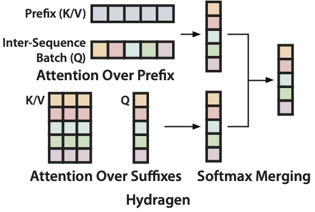
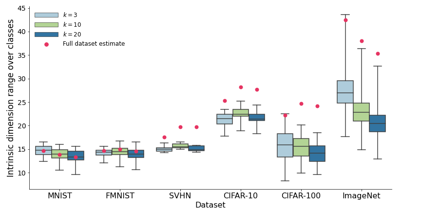
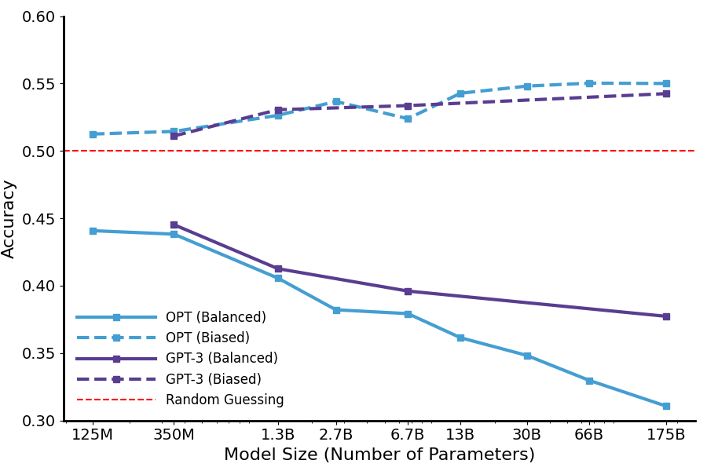
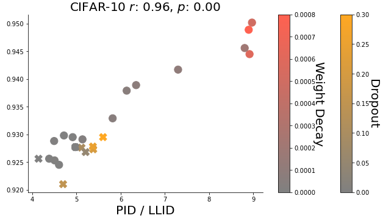
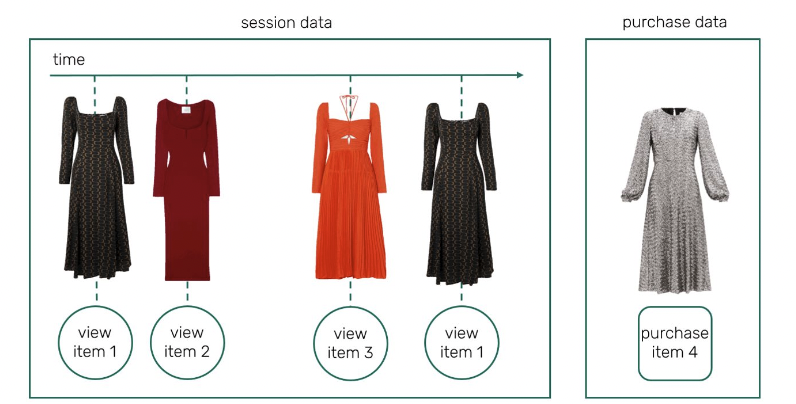

|
Hello! I am a third-year PhD student, previously at Oxford and now at Stanford. I am broadly interested in research addressing gaps in model capability that prevent them from being applied to currently out-of-reach real-world tasks. This includes improved long-context understanding and data efficiency, methods that allow models to continually learn from new experiences, and architectures whose capability scales better with test-time compute. Recently, I've worked on methods for improving LLMs by scaling test-time compute (Large Language Monkeys, CodeMonkeys), as well as corresponding systems research to make these models more efficient (Hydragen). Before this, my research focused on multimodal deep learning, including building one of the first generative models of open-world 3D scenes (NF-LDM). I have also worked on more theoretical projects exploring how the geometric structure of image data influences model performance (Union of Manifolds, Geometry of Activations). I have been fortunate to work with many amazing collaborators. At Stanford, I am working in the Scaling Intelligence Lab with Professor Azalia Mirhoseini. At the University of Oxford, I was supervised by Professor Ronald Clark in the PiXL group. Before this, I obtained my undergraduate degree at the University of Waterloo, where I studied Software Engineering with a joint major in Combinatorics and Optimization. Through Waterloo's co-op program, I completed six internships primarily focused on AI research across a variety of domains. This includes 3D generative model research at Nvidia's Toronto AI Lab advised by Professor Sanja Fidler, theoretical and recommender system research at Layer 6 AI, and computer vision research at Akasha Imaging (acquired by Intrinsic). [ Email / Google Scholar / Twitter / LinkedIn ] |
Research
|
Jordan Juravsky, Ayush Chakravarthy, Sabri Eyuboglu, Ryan Ehrlich, Bradley Brown, Joseph Shetaye, Christopher Ré, Azalia Mirhoseini [ Blog Post / Code ] LLM inference engine optimized for throughput-intensive workloads. | |
|
Ryan Ehrlich*, Bradley Brown*, Jordan Juravsky*, Ronald Clark, Christopher Ré, Azalia Mirhoseini [ Paper / Code / Trajectories / Blog Post (Monkey SWE, Monkey Do) ] Building a system for solving SWE-bench issues that is explicitly designed for scaling test-time compute. | |
|
Bradley Brown*, Jordan Juravsky*, Ryan Ehrlich*, Ronald Clark, Quoc V. Le, Christopher Ré, Azalia Mirhoseini Preprint. [ Paper / Code / Dataset / Blog Post ] Demonstrating that increasing the amount of inference compute through repeated sampling leads to large improvements in coverage - the fraction of problems solved by any attempt - across a variety tasks, models, and sample budgets. This makes it possible, and sometimes cost-effective, to amplify weaker models with many samples and outperform single attempts from more capable models. | |
|  |
Jordan Juravsky*, Bradley Brown*, Ryan Ehrlich*, Daniel Y. Fu, Christopher Ré, Azalia Mirhoseini Preprint. [ Paper / Code ] Introducing an exact, simple (no custom CUDA) implementation of attention that can accelerate LLM throughput by over 30x for problems containing shared prefixes and large batch sizes. |
|
Seung Wook Kim*, Bradley Brown*, Kangxue Yin, Karsten Kreis, Katja Schwarz, Daiqing Li, Robin Rombach, Antonio Torralba, Sanja Fidler IEEE Conference on Computer Vision and Pattern Recognition (CVPR) 2023. [ Project Page / Paper ] Building a generative model of open-world 3D scenes trained on real-world in-the-wild data. | |
|  |
Bradley C.A. Brown, Anthony L. Caterini, Brendan Leigh Ross, Jesse C. Cresswell, Gabriel Loaiza-Ganem International Conference on Learning Representations (ICLR) 2023. [Paper / Video / Code] Extending the manifold hypothesis to support natural image data lying on a union of manifolds with varying intrinsic dimension. Show increased performance in generative modelling and image classification tasks by designing models with an inductive bias for this structure. |
|  |
Jordan Juravsky*, Bradley Brown*, Atif Mahmud*, Ryan Ehrlich*, Wais Shahbaz* Tiny Paper at the International Conference on Learning Representations (ICLR) 2023. [Paper] Demonstrating that large language models (LLMs) can be misled by providing them with factually correct, but unrepresentative/biased examples, in the context of integer-to-integer piecewise functions. |
|  |
Bradley C.A. Brown, Jordan Juravsky, Anthony L. Caterini, Gabriel Loaiza-Ganem NeurIPS 2022 workshops: OPT 2022 and HITY 2022. [ Paper / Code ] Investigating how the intrinsic dimension of activations in deep neural networks are affected by regularization, correlated with improved validation performance and are coupled with the effects of sudden generalization (grokking). |
|  |
Yichao Lu, Zhaolin Gao, Zhaoyue Cheng, Jianing Sun, Bradley Brown, Guangwei Yu, Anson Wong, Felipe Pérez, Maksims Volkovs Proceedings of the Recommender Systems Challenge 2022. [Paper] Leveraging transformers and self-supervised learning techniques to achieve 2/300+ teams on the RecSys session-based recommendation system challenge. |

|
Agastya Kalra, Guy Stoppi, Bradley Brown, Rishav Agarwal, Achuta Kadambi International Conference on Computer Vision (ICCV) 2021. [ Paper / Video / Code ] Proposing a mathematically sound rotation augmentation scheme and loss modification for object detection models that leads to better rotation invariance/equivariance. |